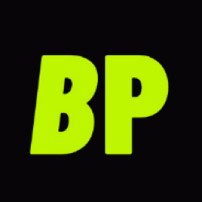
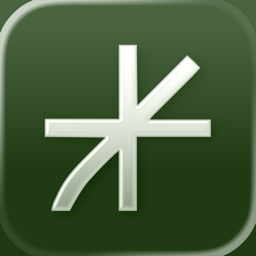
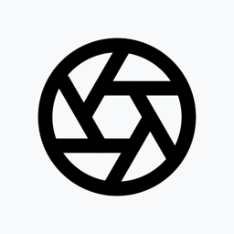

Erik
Co-founder of Fluencify, New York

BrandPlant: influencer marketing company, co-founded 2021, exited 2024.

Fluencify: where creators get paid to create. Co-founded by Erik.

About
Records
Graveyard †